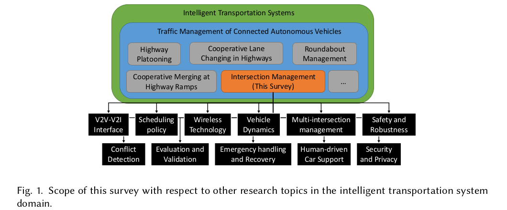
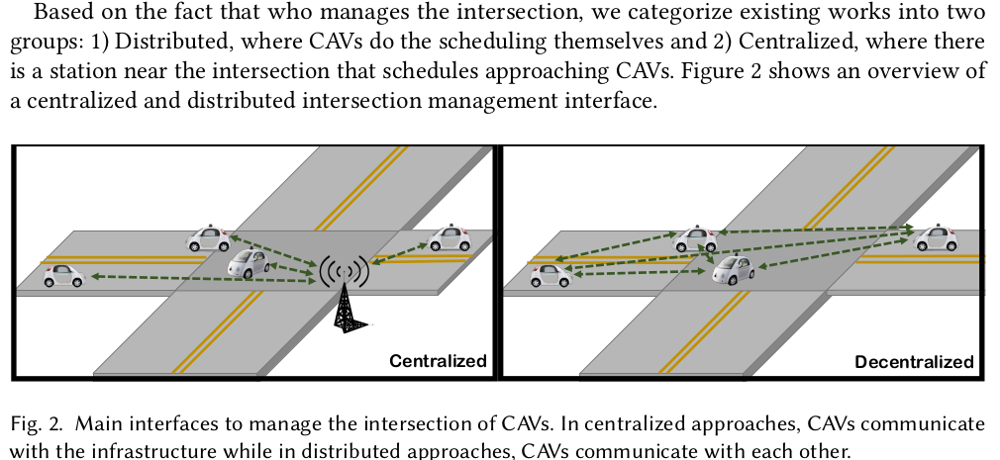
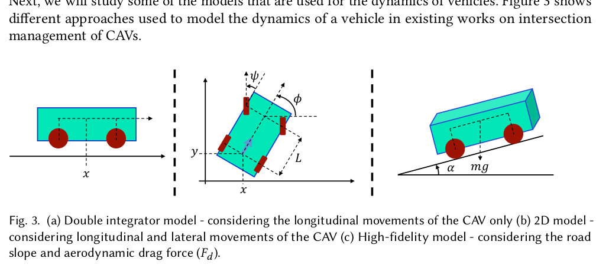
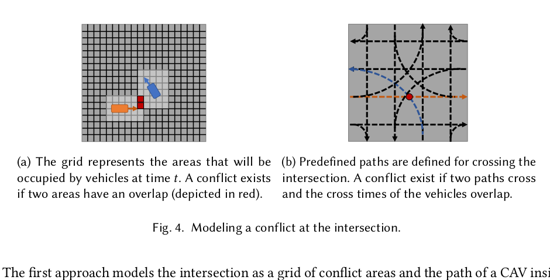
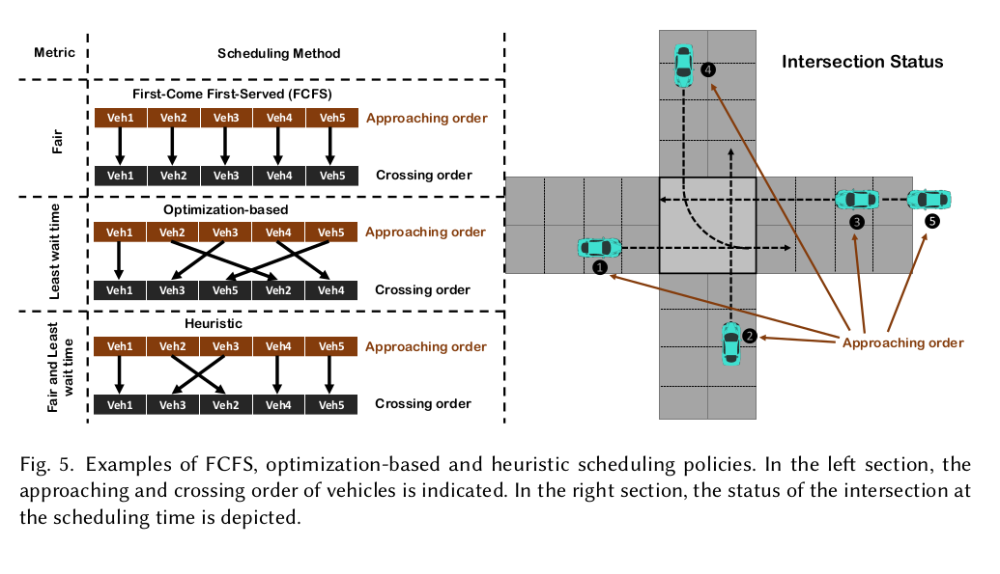
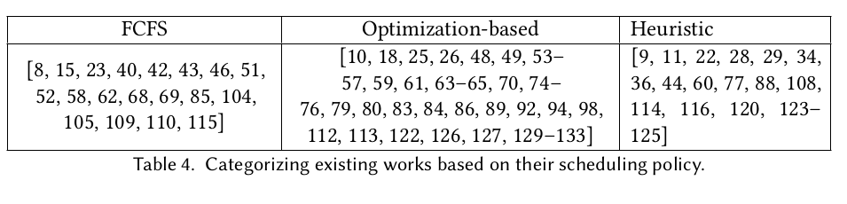
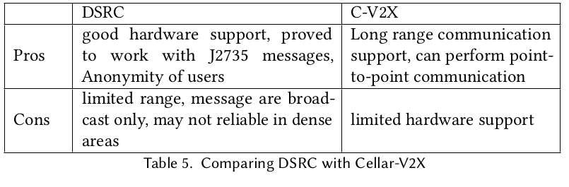
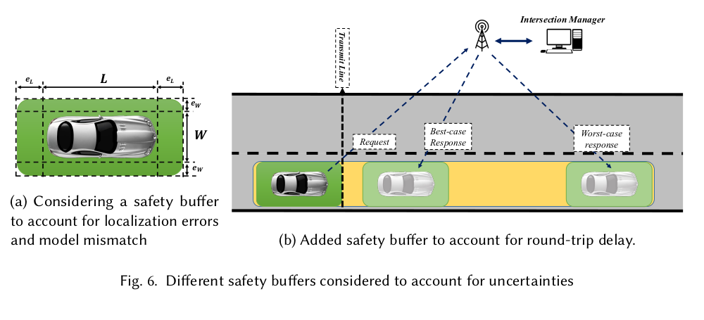
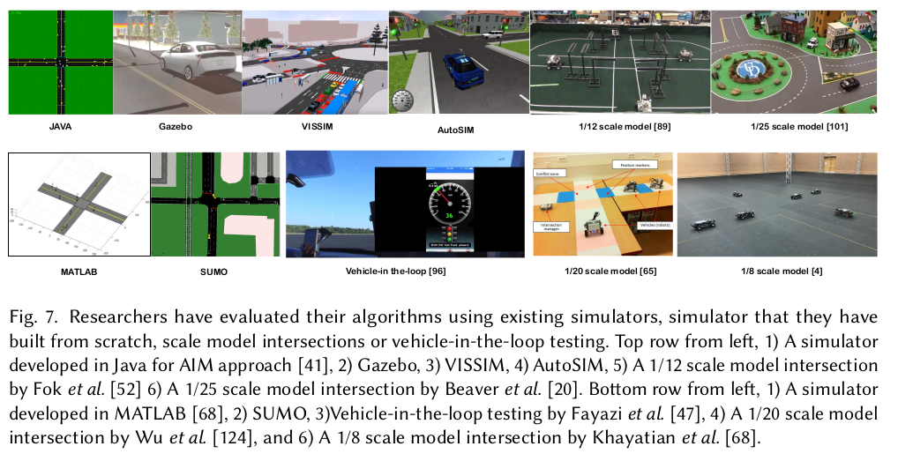
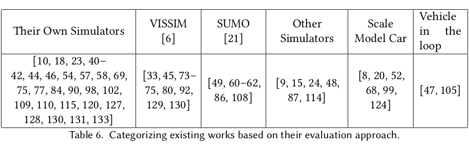

Page 1
Title, Abstract, and Scope Opening Abstract + Introduction
Page overview 本页给出论文题目、作者、摘要和引言开头。作者把 CAV intersection management 定位为提升安全和通行效率的 ITS 问题。
Original position PDF page 1. 主要内容是 abstract、keywords、Introduction 前两段。
P01 - Abstract motivation
English reading note The abstract frames CAV intersection management as a way to improve safety, mobility, energy use, and crash reduction by coordinating crossing times.
中文解释 摘要先说明为什么要研究这个问题：CAV 可以交换信息并预约通过交叉口的时间，从而减少不必要停车和人为错误导致的事故。
Chinese summary CAV 交叉口管理的核心目标是安全、效率和少停车。
P02 - Survey dimensions
English reading note The survey promises a broad evaluation across interface, scheduling, wireless technology, vehicle models, conflict detection, multi-intersection extension, mixed traffic, robustness, recovery, security, and evaluation methods.
中文解释 这不是单一算法论文，而是系统性 survey。作者关心一个真实 AIM 系统从通信到安全再到评估的完整链条。
Chinese summary 本文的价值是给 AIM 研究列出部署维度清单。
JSSP/AIM 关联：你的调度模型可以放在 scheduling policy 维度里，但论文写作要承认通信、车辆模型和安全是系统级约束。
P03 - ITS and AV context
English reading note The introduction connects ITS, ADAS, and autonomous driving progress, then narrows toward connected autonomous vehicles.
中文解释 引言用 ITS 和自动驾驶发展做背景：单车自动驾驶能力提升后，下一步是车辆之间、车辆与基础设施之间的协作。
Chinese summary 从 AV 到 CAV 的关键变化是“连接”和协同。
P04 - Scope narrowing
English reading note The authors distinguish intersection management from platooning, merging, roundabouts, and lane changing, then focus on signal-free intersections.
中文解释 作者把研究范围收窄到无信号交叉口，不讨论所有 CAV 交通管理问题。这对后面分类非常重要。
Chinese summary 本文聚焦 signal-free intersection management。
Chinese page summary 第 1 页建立大背景：CAV 通过通信协调交叉口通行，有潜力提升安全和效率。本文作为 survey，不提出单一方法，而是梳理 AIM 部署需要考虑的多个维度。
CAV ITS signal-free intersection survey dimensions
Back to top
Page 2
Survey Scope and Motivation Fig. 1

Fig. 1: survey scope in ITS and CAV traffic management. Page overview 本页用 Fig. 1 展示调查范围，并解释为什么交叉口是安全关键区域。作者也比较已有 survey 的不足。
P01 - Fig. 1 scope map
English reading note The figure positions intersection management within ITS and separates it from other CAV traffic tasks.
中文解释 图 1 是本文的导航图：交叉口管理属于 CAV traffic management，下面再拆成接口、调度、通信、车辆模型、安全等问题。
Chinese summary AIM 是一个系统问题，不只是调度算法。
P02 - Crash motivation
English reading note The authors cite intersection crash risk and argue that coordinated reservations can reduce stops, travel time, fuel consumption, and human-error crashes.
中文解释 交叉口是事故高发区域。CAV 如果能预约通行时间，就可以避免红灯闯入、抢行等人为错误。
Chinese summary 交叉口管理的动机是事故减少和效率提升。
P03 - Centralized and distributed split
English reading note Existing approaches are introduced as either distributed, where vehicles coordinate, or centralized, where infrastructure gives crossing plans.
中文解释 作者开始铺垫第 2 节的核心分类：车辆自己协商，或者由路侧 IM 统一安排。
Chinese summary AIM 接口的第一分叉是分布式 vs 集中式。
JSSP/AIM 关联：JSSP 调度天然更接近 centralized assignment，因为需要统一决定资源占用顺序。
P04 - Gap in previous surveys
English reading note The authors argue prior surveys were either older, scheduling-focused, incomplete, or non-technical.
中文解释 这段是在说明本文贡献：它不是只按年份、国家或目标分类，而是从技术和部署维度评价。
Chinese summary 本文填补的是“系统级技术分类”的 survey gap。
Chinese page summary 第 2 页通过图 1 和事故动机说明本文研究边界。关键理解：交叉口管理要同时处理调度、通信、安全、鲁棒性和评估，不应只看吞吐量。
centralized distributed reservation survey gap
Back to top
Page 3
Article Organization and Interface Categories V2I/V2V Interface

Fig. 2: centralized vehicles-to-infrastructure vs decentralized vehicle-to-vehicle coordination. Page overview 本页结束引言并进入第 2 节，强调部署算法必须明确通信内容和决策责任。
P01 - Survey dimensions restated
English reading note The authors list the evaluation dimensions again and describe the structure of the article.
中文解释 这段相当于全文目录，告诉读者每一节会处理一个部署维度。
Chinese summary 文章结构是系统清单式 survey。
P02 - Interface design question
English reading note Before deployment, designers must define what information is exchanged and who schedules the vehicles.
中文解释 这是接口问题的本质：不是只问算法怎么排队，还要问“谁知道什么、谁决定什么”。
Chinese summary 接口决定信息流和控制权。
难点：如果信息不完整，调度器的最优解可能只是“信息条件下的最优”，不是实际最优。
P03 - Distributed vs centralized
English reading note The page defines distributed approaches as vehicle-led scheduling and centralized approaches as infrastructure-led scheduling.
中文解释 分布式：CAV 之间通信后自己决定。集中式：交叉口附近的 IM 收集状态并安排车辆。
Chinese summary 集中式更像边缘调度器，分布式更像车辆协商。
P04 - Distributed advantage
English reading note The first stated advantage of distributed systems is less dependence on infrastructure and better applicability to rural or lightly used intersections.
中文解释 分布式方法不需要安装完整路侧设备，因此部署门槛低。
Chinese summary 分布式的优势是基础设施依赖低。
Chinese page summary 第 3 页是接口章节的入口。理解重点是：AIM 算法的可部署性取决于通信协议、共享信息和调度责任分配。
V2V V2I IM distributed centralized
Back to top
Page 4
Distributed Interface Examples Distributed Page overview 本页列举多个分布式交叉口管理方法，展示车辆之间需要交换的消息、状态和冲突解决规则。
Original position PDF page 4. Section 2.1 Distributed Approaches.
P01 - Dynamic leader approach
English reading note One distributed method lets nearby CAVs form groups, share vehicle state, and eventually select a temporary leader to schedule crossing times.
中文解释 虽然叫分布式，但这里会临时选出一个 leader。这个 leader 实际上承担了小范围 IM 的角色。
Chinese summary 动态 leader 是“分布式中的局部集中式”。
P02 - STIP messages
English reading note STIP uses message types such as enter, cross, and exit, and resolves overlapping zone use with FCFS priority.
中文解释 STIP 把车辆通行动作拆成消息协议。冲突时，早到车辆优先，晚到车辆减速或停下。
Chinese summary STIP 是带消息状态机的 FCFS 分布式协议。
P03 - MPC coordination
English reading note MPC-based approaches repeatedly solve local optimal control problems using shared trajectory information.
中文解释 MPC 方法不是只排顺序，而是车辆在短时间窗口内不断重算控制动作。
Chinese summary MPC 适合动态重规划，但计算和通信要求更高。
P04 - Negotiation and conflict zones
English reading note Other approaches use request-response negotiation or conflict-zone timing broadcasts to decide which CAV has priority.
中文解释 这些方法都在解决同一个问题：两个车辆未来路径冲突时，如何在没有中央 IM 的情况下达成一致。
Chinese summary 分布式冲突解决依赖一致的时间和共享状态。
JSSP/AIM 关联：conflict zone timing 与 JSSP 的 machine occupation time 很接近。
Chinese page summary 第 4 页说明分布式方法有多种形态：leader、消息协议、MPC、协商和冲突区广播。共同难点是状态同步、通信负担和一致决策。
STIP MPC leader conflict zone
Back to top
Page 5
Distributed Summary and QB-IM QB-IM Page overview 本页从分布式方法总结过渡到集中式方法，并详细介绍 query-based intersection management。
Original position PDF page 5. Sections 2.1 and 2.2.1.
P01 - Limited communication range
English reading note Some distributed systems must estimate out-of-range vehicles from neighbor broadcasts when direct communication is limited.
中文解释 如果通信范围有限，车辆不一定知道所有冲突对象，只能通过邻居信息估计远处车辆状态。
Chinese summary 分布式方法会遇到信息不完整问题。
P02 - Distributed methods summarized
English reading note The survey notes that distributed protocols differ substantially in message type, message size, and whether a leader is used.
中文解释 分布式并不是一个统一算法族，而是一组通信协议和冲突解决机制。
Chinese summary 分布式方法的差异主要在协议和消息复杂度。
P03 - Centralized split
English reading note Centralized methods follow a server-client pattern and are divided into query-based and assignment-based management.
中文解释 集中式方法里，车辆和 IM 通信。QB-IM 是车辆提方案，IM 接受/拒绝；AB-IM 是 IM 直接分配方案。
Chinese summary 集中式方法核心分为 QB-IM 和 AB-IM。
P04 - AIM as QB-IM
English reading note The classic AIM approach uses a reservation grid: vehicles request entry, the IM checks future space-time conflicts, and then accepts or rejects.
中文解释 AIM 是 QB-IM 的代表。车辆反复申请，IM 检查预约格是否冲突。如果冲突，车辆减速后再申请。
Chinese summary QB-IM 简单，但可能导致多次请求和低吞吐。
难点：QB-IM 的“拒绝后重试”会把控制负担推回车辆，也会增加网络消息。
Chinese page summary 第 5 页的核心是 QB-IM。它实现简单，IM 只做接受/拒绝，但在高密度下车辆可能多次请求甚至停下，因此吞吐可能下降。
QB-IM AIM reservation grid CZOT
Back to top
Page 6
Assignment-Based IM and Interface Tradeoffs AB-IM Page overview 本页介绍 platoon-based QB-IM、assignment-based IM，并给出接口分类表。
Original position PDF page 6. Section 2.2.2 and Table 1.
P01 - Platoon query-based methods
English reading note Some QB-IM methods group CAVs into platoons and let platoon leaders communicate with the IM to reduce message overhead.
中文解释 车队方法把多个车辆打包，由 leader 统一请求预约，减少 IM 面对的请求数量。
Chinese summary platoon 是降低通信/调度粒度的一种方法。
P02 - AB-IM definition
English reading note In AB-IM, the IM collects vehicle information and assigns trajectories, arrival times, velocities, or space-time occupancy.
中文解释 AB-IM 中 IM 权力更大，车辆上报状态后按 IM 给出的时间或轨迹执行。
Chinese summary AB-IM 是主动调度，而不是被动审核。
JSSP/AIM 关联：priority-aware JSSP scheduler 应定义为 AB-IM，因为它需要统一分配 crossing order 和 conflict-zone occupation。
P03 - Crossroads and utility-based methods
English reading note Examples include clock synchronization, assigned constant velocities, time-to-actuate commands, utility functions, and feedback from CAVs.
中文解释 AB-IM 不只是给一个顺序，还可能分配速度、动作时刻，甚至根据效用函数优化。
Chinese summary AB-IM 可表达更丰富的控制命令。
P04 - Table 1 classification
English reading note Table 1 categorizes papers into distributed, query-based centralized, and assignment-based centralized interfaces.
中文解释 表 1 是文献地图：它不是评价谁最好，而是说明已有工作采用了哪种接口模式。
Chinese summary 接口分类帮助定位你的方法属于哪一类。
Chinese page summary 第 6 页说明 AB-IM 的能力更强，能直接分配轨迹、时间和速度，但也意味着 IM 计算负担和可靠性要求更高。
AB-IM platoon time-to-actuate utility function
Back to top
Page 7
Centralized vs Distributed and Vehicle Dynamics Start Tradeoff + Dynamics

Fig. 3: vehicle dynamics fidelity levels. Page overview 本页总结接口取舍，并进入车辆动力学模型。它把“谁调度”转向“如何预测车辆能否按计划运动”。
P01 - QB-IM vs AB-IM throughput
English reading note AB-IM can achieve higher throughput than QB-IM, but the IM processing burden is larger.
中文解释 AB-IM 因为能全局分配，所以效率可能更高；但它必须求解更复杂的调度/控制问题。
Chinese summary AB-IM 用计算换吞吐。
P02 - Reliability and synchronization
English reading note Centralized IM can be a single point of failure, while distributed systems may have more network overhead. Both require time synchronization.
中文解释 集中式怕 IM 失效，分布式怕广播开销和一致性。无论哪种，都必须共享同一时间基准。
Chinese summary 时间同步是 AIM 安全性的基础。
难点：如果时间不同步，所谓“同一时间不占同一冲突区”的约束就没有共同含义。
P03 - Need for vehicle models
English reading note The vehicle dynamics section begins by stating that a model is needed to estimate or predict future trajectories.
中文解释 调度器给出的时间只有在车辆能按模型到达时才有意义。因此需要车辆动力学或轨迹预测。
Chinese summary 车辆模型连接调度计划和物理运动。
P04 - Double integrator
English reading note The first model is a one-dimensional double integrator that describes position, velocity, and acceleration along a path.
中文解释 双积分模型只考虑纵向运动，简单、线性、容易求解，但不能表达复杂转弯。
Chinese summary 1D 模型适合调度层快速估计。
Chinese page summary 第 7 页承上启下：接口取舍之后，作者开始讨论车辆动力学。重点是安全调度必须依赖可预测的车辆运动模型。
single point of failure time synchronization double integrator vehicle dynamics
Back to top
Page 8
Vehicle Dynamics Models and Fidelity Tradeoff Model fidelity Page overview 本页介绍 4-wheel、bicycle 和考虑坡度/阻力/质量的高保真模型，并给出文献分类表。
Original position PDF page 8. Section 3 and Table 2.
P01 - 4-wheel model
English reading note The 4-wheel model accounts for longitudinal and lateral position, heading angle, steering, and speed.
中文解释 4-wheel 模型比 1D 更接近实际车辆，能表示转向和二维运动。
Chinese summary 4-wheel 模型提高精度，但增加复杂度。
P02 - Bicycle model
English reading note The bicycle model simplifies the 4-wheel model by projecting front and rear wheels into two virtual wheels.
中文解释 bicycle model 是常用折中：保留转向/横向运动，又比完整四轮模型简单。
Chinese summary bicycle model 是精度和计算量之间的折中。
P03 - High-fidelity factors
English reading note More detailed models include air drag, slope, rolling resistance, vehicle mass, torque, and efficiency.
中文解释 高保真模型可以更准确，但参数很多，而且很多参数会随环境变化。
Chinese summary 模型越真实，实时估计越难。
难点：模型复杂不自动等于系统更安全；参数估计错了，高保真模型也会失效。
P04 - Table 2 and open problem
English reading note The survey categorizes papers by model fidelity and concludes that choosing the right fidelity remains open.
中文解释 作者强调真正难的是选模型层级：太粗会不准，太细会慢。
Chinese summary 车辆模型保真度是实时 AIM 的开放问题。
JSSP/AIM 关联：你的 processing time 可以来自简化动力学和安全缓冲，而不用在第一阶段实现完整车辆控制。
Chinese page summary 第 8 页的核心是 model fidelity tradeoff。对调度论文，最重要的是说明车辆占用冲突区时间如何估计，以及模型误差如何转化成安全缓冲。
4-wheel model bicycle model air drag processing time
Back to top

Fig. 4: occupancy map vs trajectory conflict model. Page overview 本页是 JSSP/AIM 最关键的基础页之一：它说明如何把车辆冲突建模成可检查的空间-时间关系。
P01 - Remaining dynamics caveat
English reading note The page begins by noting that accurate behavior prediction may require online identification of changing parameters.
中文解释 道路坡度、风、质量、摩擦等都会变化，固定模型不一定可靠。
Chinese summary 车辆行为预测需要处理动态参数。
P02 - Two conflict detection methods
English reading note The survey identifies two main approaches: space-time occupancy maps and expected trajectory intersections.
中文解释 一种把交叉口切成网格，检查同一时间是否重叠；另一种用预定义轨迹和冲突点判断。
Chinese summary 冲突检测分为占用图和轨迹冲突两类。
P03 - Occupancy map
English reading note Occupancy maps represent which grid cells a CAV uses at each time step, then avoid simultaneous occupation.
中文解释 这相当于把安全约束转成离散布尔检查：同一格子同一时间只能给一辆车。
Chinese summary occupancy map 易检查，但粒度影响吞吐和计算。
P04 - Trajectory-based conflict
English reading note Trajectory-based methods use known paths and crossing locations instead of storing the entire occupancy map.
中文解释 如果直行/左转/右转路径已知，可以预先找哪些路径会相交，只在冲突点检查时间重叠。
Chinese summary 轨迹冲突模型更接近 conflict-zone/resource graph。
JSSP/AIM 关联：conflict zone 就是 JSSP 的 machine/resource；车辆轨迹就是 operation sequence。
Chinese page summary 第 9 页把 AIM 与调度模型连接起来：只有先定义冲突区/占用格，才能把车辆通过交叉口转化为资源占用和排序问题。
occupancy map trajectory conflict conflict zone resource
Back to top
Page 10
Scheduling Policy and FCFS Scheduling

Fig. 5: FCFS, optimization-based, and heuristic scheduling. Page overview 本页进入调度策略，是与你的研究最直接相关的页。作者定义 scheduling，并介绍 FCFS。
P01 - Scheduling definition
English reading note The paper defines scheduling as deciding which CAV crosses first, second, and so on while maintaining safety.
中文解释 这里的 scheduling 不是普通排队，而是在安全约束下决定车辆通过顺序。
Chinese summary AIM 的调度问题是安全约束下的通行顺序决策。
JSSP/AIM 关联：这正是把 AIM 映射成 JSSP 的入口。
P02 - Three families
English reading note The survey groups policies into FCFS, heuristic, and optimization-based methods.
中文解释 三类方法对应三种思路：按到达顺序、用规则近似、求解优化问题。
Chinese summary 调度策略分为公平优先、规则折中、优化目标优先。
P03 - FCFS in AIM
English reading note FCFS processes requests in arrival order and was used in early reservation-grid AIM and many related approaches.
中文解释 FCFS 直观且公平，但不一定利用所有非冲突并行机会。
Chinese summary FCFS 是重要 baseline，但不是效率上限。
P04 - Platoons and priority values
English reading note Some FCFS-like methods schedule platoons or compute priority from arrival time.
中文解释 即使看起来有 priority，很多方法的 priority 仍然只是 arrival time 的变体。
Chinese summary arrival-time priority 不等于社会/车辆类型优先级。
JSSP/AIM 关联：你的 priority-aware 贡献可以区别于 FCFS priority，因为你的权重来自车辆类型/乘客/应急，而不只是到达早晚。
Chinese page summary 第 10 页定义了交叉口调度，并把方法分为 FCFS、优化型和启发式。FCFS 是公平 baseline，但在高密度和异构优先级下可能效率不足。
scheduling FCFS heuristic optimization-based
Back to top
Page 11
Optimization-Based Scheduling Optimization Page overview 本页综述优化型调度：通过 MILP、树搜索、POMDP、branch-and-bound 等方法最小化等待/旅行时间或提高吞吐。
Original position PDF page 11. Section 5.2.
P01 - Optimization vs FCFS
English reading note Optimization-based methods may change the crossing order relative to arrival order to reduce average travel time.
中文解释 优化方法会主动打破先到先过，因为它关心整体目标而不是单个车辆顺序公平。
Chinese summary 优化型方法用全局效率换取对 FCFS 的偏离。
P02 - Signalized optimization
English reading note Some methods optimize signal phase and timing so CAVs can follow trajectories that meet green lights.
中文解释 这类方法仍保留信号灯，只是让信号和车辆轨迹更智能地配合。
Chinese summary SPaT 优化是信号控制下的 CAV 协同。
P03 - Signal-free optimization
English reading note For signal-free intersections, objectives often minimize travel time, wait time, or crossing time under collision-avoidance constraints.
中文解释 无信号优化的目标通常是延误/通过时间，约束是车辆不能碰撞、不能进入 unsafe states。
Chinese summary 无信号 AIM 是带安全约束的优化问题。
P04 - Solver variety
English reading note The page lists many solvers and formulations: POMDP, tree search, iterative sequencing, branch-and-bound, PSO, MILP, distributed optimization, and LP.
中文解释 这说明 AIM 优化问题没有唯一标准解法。不同论文根据模型、规模和实时性选择求解器。
Chinese summary 优化型 AIM 方法多样，但实时扩展性是共同挑战。
JSSP/AIM 关联：MILP/CP-SAT 可作为小规模 benchmark，在线大规模可以用 greedy/RL policy。
Chinese page summary 第 11 页说明优化型调度能直接优化延误、旅行时间和吞吐，但方法复杂、求解时间可能随车辆数快速上升。
MILP POMDP tree search branch-and-bound
Back to top
Page 12
Other Objectives and Heuristic Scheduling Heuristic Page overview 本页继续优化型方法的目标函数，然后转向启发式方法，包括 BATCH、竞价、博弈、RL、ACO 等。
Original position PDF page 12. Sections 5.2 and 5.3.
P01 - Objectives beyond travel time
English reading note Optimization can target velocity variation, passenger discomfort, communication overhead, acceleration, and fuel consumption.
中文解释 AIM 目标不只延误，还可以包括舒适性、能耗、通信负担和控制平滑性。
Chinese summary 目标函数选择决定系统行为。
P02 - Heuristic definition
English reading note Heuristics are not guaranteed optimal but can be good enough for immediate scheduling needs.
中文解释 启发式牺牲最优性证明，换取速度和实现简单性。
Chinese summary 启发式适合实时场景。
P03 - BATCH and lane rearrangement
English reading note BATCH collects requests for a short period and then reorders entry patterns; another approach changes lane configuration to reduce conflicts.
中文解释 BATCH 的思想是等一小段时间再批量重排，避免车辆一来就立刻按局部顺序处理。
Chinese summary 批处理可以改善 FCFS 的局部短视。
P04 - Bidding, game theory, reward functions
English reading note Heuristic methods include bidding systems, game-theoretic policies, reward functions, navigation functions, and priority-FCFS mixtures.
中文解释 这些方法都在用规则或效用函数决定谁先通过，但不一定求全局最优。
Chinese summary 启发式方法是可解释规则和近似优化的混合。
JSSP/AIM 关联：priority-greedy 可以作为你的重要 baseline。
Chinese page summary 第 12 页说明 AIM 调度目标可以很丰富。启发式方法虽然不保证最优，但往往更适合在线高密度交通。
BATCH game theory reward priority-FCFS
Back to top
Page 13
Scheduling Classification and Wireless Technology Table 4 + V2X

Table 4: papers grouped by scheduling policy. Page overview 本页总结调度策略的公平/吞吐/计算时间权衡，并进入无线通信技术。
P01 - Table 4
English reading note The table maps existing papers into FCFS, optimization-based, and heuristic scheduling categories.
中文解释 表 4 是调度文献地图，可用来说明你的方法和 baseline 应该放在哪一类。
Chinese summary 调度文献可按三类组织 related work。
P02 - Fairness and throughput
English reading note Scheduling directly affects throughput, but fairness also matters because excessive waiting is unacceptable.
中文解释 这段是你的 priority-aware 研究的关键：高优先级不能导致低优先级无限等待。
Chinese summary 调度必须平衡效率和公平。
JSSP/AIM 关联：weighted delay 需要配合 maximum wait 或 fairness penalty。
P03 - Processing delay problem
English reading note Optimization-based scheduling may introduce processing delays that grow with intersection scale.
中文解释 求最优本身需要时间，车辆在等结果时仍在移动，因此计算时间会影响安全。
Chinese summary 实时调度不能只看解质量，也要看求解时间。
P04 - DSRC and C-V2X start
English reading note The wireless section introduces V2X and then distinguishes DSRC and C-V2X as major communication options.
中文解释 通信层决定车辆能否及时交换位置、速度、请求和调度命令。
Chinese summary V2X 是 AIM 信息流的基础。
Chinese page summary 第 13 页的重点是调度取舍和通信入口：公平、吞吐、求解时间三者要一起考虑，通信协议则决定信息能否及时可靠到达。
fairness throughput processing time DSRC C-V2X
Back to top
Page 14
Wireless Tradeoffs and Multi-Intersection Management Communication + Network

Table 5: DSRC and C-V2X comparison. Page overview 本页比较 DSRC 和 C-V2X，说明通信延迟/范围/速率对安全和容量的影响，并开始多路口管理。
P01 - DSRC vs C-V2X
English reading note DSRC has mature hardware and anonymity, while C-V2X supports longer range and point-to-point communication but had less hardware support.
中文解释 两种通信技术各有取舍：DSRC 成熟但密集环境和广播方式有限；C-V2X 范围长但生态支持问题更多。
Chinese summary 通信协议会影响可扩展性和可靠性。
P02 - Timing constraints
English reading note Intersection management needs bounded communication delay because safety-critical messages must arrive on time.
中文解释 如果调度命令迟到，车辆可能已经过了安全减速点。因此通信时延必须有上界。
Chinese summary 有界时延是安全调度的前提。
难点：平均低延迟不够，安全系统更关心最坏情况延迟。
P03 - Capacity from communication load
English reading note Given message sizes and communication rate, one can estimate the maximum number of vehicles supported simultaneously.
中文解释 交叉口容量不只由道路几何决定，也由每辆车要发送多少数据、网络能承载多少数据决定。
Chinese summary 网络容量限制 AIM 的车辆规模。
P04 - Multi-intersection start
English reading note The multi-intersection section frames city traffic as a grid of intersections and introduces delay estimation and A* scheduling/routing.
中文解释 多路口问题把单交叉口调度扩展成路径选择、拥堵预测和多个 IM 协同。
Chinese summary 多路口管理耦合 routing 和 scheduling。
Chinese page summary 第 14 页提醒我们：通信不是附属实现，它影响安全缓冲、控制区距离和可管理车辆数量。多路口管理则进一步引入路径和拥堵维度。
bounded delay capacity A* multi-intersection
Back to top
Page 15
Hybrid Human-CAV Intersections Mixed traffic Page overview 本页从多路口方法转向 hybrid intersections，讨论 CAV 与 human-driven vehicles 共存时的过渡方案。
Original position PDF page 15. Sections 7 and 8.
P01 - Multi-intersection computation
English reading note Fine-grained vehicle-level information is useful but computationally expensive for multi-intersection management.
中文解释 越精细越准确，但多路口下车辆数量太多，计算压力会很大。
Chinese summary 多路口管理需要选择合适信息粒度。
P02 - Hybrid traffic motivation
English reading note The authors argue that fully autonomous intersections are far away; mixed HV-CAV intersections are a necessary transition.
中文解释 现实中不会立刻全是 CAV，所以必须考虑人类驾驶车辆和 CAV 混行。
Chinese summary hybrid intersection 是现实部署过渡阶段。
P03 - FCFS+Light and H-AIM
English reading note Hybrid approaches combine reservation-based AIM for CAVs with traffic lights or vehicle detection for human drivers.
中文解释 在混合交通中，CAV 可以预约，HV 仍按信号灯或检测系统通行。
Chinese summary 混合交通常需要保留信号控制。
P04 - Semi-AIM and onboard interfaces
English reading note Semi-AIM considers human or semi-autonomous vehicles that request reservations or transfer limited control to driver agents.
中文解释 这些方案试图让 HV 也能参与预约，但需要按钮、车载设备或驾驶员配合。
Chinese summary HV 接入 AIM 需要额外人机接口。
JSSP/AIM 关联：第一阶段建议明确 full CAV 假设；hybrid traffic 放在 limitations。
Chinese page summary 第 15 页说明全 CAV 交叉口短期内不现实。混合交通需要信号灯、车载设备或驾驶员提示，因此比纯 CAV 调度复杂很多。
hybrid intersection HV FCFS+Light Semi-AIM
Back to top
Page 16
Human Support and Safety Buffers Safety

Fig. 6: safety buffers for localization/model mismatch and round-trip delay. Page overview 本页结束 hybrid traffic，并进入 safety and robustness。Fig. 6 是理解安全缓冲的核心图。
P01 - Pass/stop commands for HVs
English reading note Some hybrid designs envision simple commands such as pass and stop, assuming human drivers follow them.
中文解释 这种假设很强：人类驾驶员是否及时、准确服从命令并不稳定。
Chinese summary HV 行为不可预测是混合交通难点。
P02 - Pedestrians and abnormal behavior
English reading note Supporting human drivers and pedestrians requires extra devices, training, and flexibility for mistakes or abnormal behavior.
中文解释 真正的交叉口还包括行人和异常行为，这些在很多 CAV-only 论文里被简化掉了。
Chinese summary 真实部署需要考虑行人和人为错误。
P03 - Safety and robustness opening
English reading note The safety section begins by stressing that intersection management directly affects vehicles carrying humans and must handle faults and uncertainty.
中文解释 AIM 是安全关键系统，不能只在理想仿真里表现好。
Chinese summary 安全和鲁棒性是部署底线。
P04 - Safety buffer concept
English reading note The IM reserves larger space-time regions around vehicles to account for localization error, model mismatch, and communication round-trip delay.
中文解释 安全缓冲就是把不确定性转成额外空间和时间。误差越大，缓冲越大，吞吐越低。
Chinese summary 安全缓冲连接不确定性和吞吐损失。
JSSP/AIM 关联：safety headway 和 processing time 应包含 buffer，priority 不能减少安全缓冲。
Chinese page summary 第 16 页从混合交通转入安全。最重要概念是 safety buffer：它使调度计划对定位误差、模型误差和通信延迟更保守。
safety buffer localization error round-trip delay pedestrians
Back to top
Page 17
Robustness Fault Models Faults Page overview 本页详细讨论定位误差、网络延迟、处理时间、模型不匹配和其他故障。
Original position PDF page 17. Section 9.
P01 - Network failures
English reading note Safety depends on authentic and timely communication because CAVs use received information to schedule crossing times.
中文解释 如果消息延迟、丢失或被篡改，调度器看到的状态就不可靠。
Chinese summary 网络可靠性直接影响安全。
P02 - Processing time and RTD
English reading note Conflict checking and optimization take time; because vehicles keep moving, round-trip delay changes where they are when a command arrives.
中文解释 车辆不会停在原地等算法，所以计算时间会变成位置误差和安全风险。
Chinese summary 调度计算时间也是安全变量。
难点：实时系统要分析 worst-case execution time，而不是只报告平均运行时间。
P03 - Vehicle model mismatch
English reading note If the assumed vehicle model differs from the real vehicle behavior or disturbances occur, scheduled arrival times may become unsafe.
中文解释 模型不匹配会让车辆实际到达冲突区的时间偏离计划。
Chinese summary 模型误差会破坏空间-时间预约。
P04 - Other faults and rogue vehicles
English reading note The page lists accidents, sudden pedestrians, infrastructure sensors, and rogue vehicles that ignore IM commands or share wrong data.
中文解释 系统还要考虑车辆故障、行人突然进入、恶意/异常车辆等非理想情况。
Chinese summary 安全证明需要明确 fault model。
JSSP/AIM 关联：deadlock-free 和 collision-free 约束只是第一层，robustness test 是后续扩展。
Chinese page summary 第 17 页说明实际 AIM 的安全问题来自多类误差和故障。调度算法若不考虑计算时间、通信延迟和模型误差，就很难称为可部署。
RTD WCET model mismatch rogue vehicle
Back to top
Page 18
Recovery and Security Concerns Recovery + Security Page overview 本页讨论 emergency 后如何恢复系统运行，并进入交叉口管理的网络安全攻击面。
Original position PDF page 18. Sections 10 and 11.
P01 - Recovery definition
English reading note Recovery means resuming intersection operation after disruptions such as emergency vehicles or broken-down CAVs.
中文解释 恢复不是简单继续运行，而是故障解除后重新建立安全状态和调度秩序。
Chinese summary recovery 是 emergency 后恢复通行能力。
P02 - QB-IM recovery and rerouting
English reading note QB-IM can reject requests during emergencies; some scenarios require regenerating plans or rerouting when recovery is impossible.
中文解释 如果交叉口被堵住，系统不能只等待，车辆必须有重新规划路径的能力。
Chinese summary 恢复机制关系到系统 liveness。
P03 - Security opening
English reading note Security matters because vehicles communicate over shared wireless media and cooperative schedulers can be malicious.
中文解释 AIM 是 cyber-physical system，攻击通信或调度节点可能造成物理交通风险。
Chinese summary 网络攻击会变成交通安全问题。
P04 - Sybil and squatting attacks
English reading note Attacks include fake reservations, multiple identities, fake stops inside the intersection, and spoofed data that cause congestion.
中文解释 恶意车辆可以伪造请求或身份，让 IM 以为冲突很多，从而降低速度或制造拥堵。
Chinese summary Sybil/squatting attack 会破坏预约系统。
JSSP/AIM 关联：priority weight 必须来自可信来源，否则车辆可以谎报高优先级。
Chinese page summary 第 18 页强调两件事：系统异常后需要恢复机制；通信和身份攻击会直接影响调度安全与效率。
recovery liveness Sybil attack squatting attack
Back to top
Page 19
Evaluation Methods Simulation + Testbeds

Fig. 7: simulators, scale models, and vehicle-in-the-loop tests. 
Table 6: papers grouped by evaluation approach.
P01 - Evaluation taxonomy
English reading note Evaluation approaches include existing simulators, custom simulators, scale models, and vehicle-in-the-loop testing.
中文解释 评估方式从纯软件仿真到实车/缩比车实验，真实性和规模各有取舍。
Chinese summary 评估方法决定结果的可信边界。
P02 - Simulator comparison
English reading note SUMO is fast and scalable; VISSIM adds richer traffic modeling; Gazebo supports physics and sensors but is computationally heavy.
中文解释 SUMO 适合调度层大规模实验，Gazebo 更适合车辆控制和传感器仿真。
Chinese summary 不同仿真器对应不同研究层级。
JSSP/AIM 关联：你的第一阶段可用 SUMO/离散事件仿真评估调度，再在 future work 加物理仿真。
P03 - Deployment gap
English reading note The survey says signal-free approaches have not yet been deployed on public roads and are likely to be tested first on private tracks.
中文解释 这说明研究离落地还有距离，实验结果必须谨慎解释。
Chinese summary signal-free AIM 仍处于研究和测试阶段。
P04 - Simulation limitations
English reading note Simulation is scalable and reproducible, but may miss network delay, model mismatch, computation time, synchronization, and fail-safe routines.
中文解释 仿真可以证明算法趋势，但不能自动证明真实部署安全。
Chinese summary 实验要补充鲁棒性和实时性检查。
Chinese page summary 第 19 页是实验设计的核心页。对你的研究，应报告 average delay、weighted delay、class delay、throughput、runtime、max wait 和 deadlock/collision feasibility。
SUMO VISSIM Gazebo VIL scale model
Back to top
Page 20
Conclusion: Deployment Gap and Open Problems Conclusion Page overview 本页开始结论，强调已有研究很多，但真实部署仍远，因为安全、鲁棒性、可靠性研究不足。
Original position PDF page 20. Section 13.
P01 - Main conclusion
English reading note The authors conclude that deployment is far away because much work optimizes throughput while less work addresses security, robustness, and reliability.
中文解释 这是整篇 survey 的总判断：提高吞吐的论文很多，但可部署系统必须解决安全和鲁棒性。
Chinese summary AIM 的部署瓶颈不只是调度效率。
P02 - Interface takeaway
English reading note Interface choices affect network overhead, scalability, reliability, and flexibility across intersection geometries.
中文解释 接口设计要适应不同车道数、转向规则和交叉口形状。
Chinese summary 理想 AIM 接口应灵活且可扩展。
P03 - Scheduling takeaway
English reading note Scheduling must balance fairness, wait time, throughput, and computation overhead; WCET analysis is needed.
中文解释 这段非常适合支撑你的研究：调度不能只优化平均延误，还要有公平和最坏执行时间约束。
Chinese summary 轻量、有效、有界等待的调度仍是开放问题。
JSSP/AIM 关联：可以把你的目标写成 weighted delay + fairness + bounded runtime 的在线调度。
P04 - Wireless takeaway
English reading note Network delay depends on CAV count and packet load, so scalability must be verified during algorithm design.
中文解释 算法设计阶段就要估计消息数量，否则高密度下可能不可用。
Chinese summary 通信负载是可扩展性条件。
Chinese page summary 第 20 页给出了最重要 future work：调度要同时轻量、公平、高效、可验证，并考虑通信和接口约束。
deployment gap WCET fairness scalability
Back to top
Page 21
Conclusion Continued and Acknowledgement Future work Page overview 本页继续总结车辆模型、多路口、混合交通、安全、恢复、攻击和评估方法的开放问题。
Original position PDF page 21. Section 13 and 14.
P01 - Vehicle model takeaway
English reading note Model fidelity improves prediction but increases computation; fixed models can create brittle systems.
中文解释 模型越复杂越慢，固定模型还可能不适应环境变化。
Chinese summary 车辆模型需要实时性和鲁棒性折中。
P02 - Multi-intersection and HV support
English reading note Multi-intersection management must choose information granularity, and realistic systems must support human drivers and pedestrians.
中文解释 多路口要在细粒度准确和粗粒度可计算之间选择；现实交通还必须处理人类驾驶和行人。
Chinese summary 真实部署超出单路口全 CAV 假设。
P03 - Safety, recovery, security, evaluation
English reading note The authors call for safety proofs, fault models, recovery/liveness analysis, security countermeasures, and more realistic evaluation.
中文解释 结论几乎是在提醒研究者：不要只报告 throughput，要证明安全、可恢复、抗攻击，并设计真实评估。
Chinese summary 安全证明和鲁棒评估是 AIM 研究短板。
JSSP/AIM 关联：论文 limitations 可以直接沿用这些维度：hybrid traffic、communication delay、fault recovery、security。
P04 - Acknowledgement
English reading note The acknowledgement lists funding support and does not add technical content.
Chinese summary 正文技术内容到第 13 节结束。
Chinese page summary 第 21 页完成全文总结：AIM 未来研究应从单纯效率优化走向安全、鲁棒、恢复、攻击防护和真实评估。
fault model liveness security realistic evaluation
Back to top
Page 22
References Map: Foundations and Early AIM References Page overview References 开始。这里不逐条翻译，而是把引用按研究用途整理。
Original position PDF page 22. References [1]-[25].
P01 - Simulation and standards references
English reading note Early reference entries include simulator tools, DSRC standards, and traffic crash statistics.
中文解释 这些引用适合放在实验平台、通信背景和问题动机部分。
Chinese summary 工具和标准引用支撑背景与实验设置。
P02 - Protocol foundations
English reading note References here include Crossroads, STIP, Ballroom, PAIM, and early distributed/intersection protocols.
中文解释 这些文献适合用来写 AIM 协议和 reservation-based 方法的起源。
Chinese summary 早期 AIM 文献主要围绕协议和预约机制。
Chinese page summary 第 22 页参考文献主要可分成工具/标准和早期协议。写 related work 时可用它们支撑 AIM 背景。
SUMO Gazebo STIP Crossroads PAIM
Back to top
Page 23
References Map: Surveys, Security, and Optimization References Page overview 本页引用覆盖 cooperative intersection survey、安全攻击、AIM 基础和 MILP 调度等。
Original position PDF page 23. References [26]-[48].
P01 - Survey and security group
English reading note References include cooperative intersection management survey work and cyber-physical security studies.
中文解释 这些文献可以支撑“已有 survey 和安全研究”的背景。
Chinese summary survey 和 security 是论文背景的重要支线。
P02 - Dresner-Stone and MILP
English reading note This page includes Dresner and Stone AIM references and Fayazi/Vahidi MILP scheduling work.
中文解释 Dresner and Stone 是 reservation AIM 基础；MILP 文献可作为优化型调度 baseline。
Chinese summary AIM foundation 和 MILP benchmark 都在这一组引用里。
JSSP/AIM 关联：Dresner-Stone 用于背景，MILP 用于小规模最优 benchmark。
Chinese page summary 第 23 页是 related work 的高价值页：AIM 基础、混合交通、安全和 MILP 都能为你的论文提供支撑。
Dresner and Stone MILP security cooperative intersection survey
Back to top
Page 24
References Map: Coordination, Multi-Agent, and Dynamics References Page overview 本页引用包括 intersection control、multi-agent management、platoon、distributed MPC 和能耗/轨迹优化。
Original position PDF page 24. References [49]-[70].
P01 - Optimization and multi-agent methods
English reading note The references include optimal scheduling, cooperative control, multi-agent intersection management, and routing work.
中文解释 这些文献适合支撑“交叉口可以被建模为调度/优化问题”的论证。
Chinese summary 优化和多智能体方法是 AIM 的方法主线。
P02 - Dynamics and distributed MPC
English reading note Several references focus on vehicle dynamics, distributed MPC, and energy-optimal coordination.
中文解释 如果你的论文需要解释低层车辆控制和动力学边界，可以追这些引用。
Chinese summary 动力学文献可作为调度层假设来源。
Chinese page summary 第 24 页的引用适合支持方法章节背景：优化调度、多智能体协调、车辆动力学和 MPC。
multi-agent MPC optimal scheduling vehicle dynamics
Back to top
Page 25
References Map: Conflict Resolution, DSRC, and Routing References Page overview 本页引用覆盖 DSRC、distributed conflict resolution、routing、market-inspired control 和 optimization control。
Original position PDF page 25. References [71]-[96].
P01 - Communication and conflict resolution
English reading note References include DSRC/WAVE background and distributed conflict resolution for connected autonomous vehicles.
中文解释 这组文献可以支撑通信约束和冲突解决的技术背景。
Chinese summary 通信和冲突解决是调度可行性的前提。
P02 - Routing and control extensions
English reading note Other references address routing across multiple intersections, market-based scheduling, and closed-form optimal control.
中文解释 这些文献适合放在 future work 或 multi-intersection extension 中。
Chinese summary 多路口和控制扩展可以作为后续研究方向。
Chinese page summary 第 25 页引用可用于补强通信、冲突解决、多路口和 optimal control 背景。
DSRC conflict resolution routing optimal control
Back to top
Page 26
References Map: Evaluation, Mixed Traffic, and Learning References Page overview 本页引用覆盖 pedestrian/hybrid support、SUMO、mixed reality、DCL-AIM、game theory 和 slot-based systems。
Original position PDF page 26. References [97]-[118].
P01 - Evaluation and mixed traffic
English reading note References cover pedestrians, simulation platforms, mixed autonomous/human intersections, and scale testing.
Chinese summary 评估和混合交通文献支持 limitations。
P02 - Learning and heuristic methods
English reading note The page includes decentralized coordination learning and heuristic/game-theoretic intersection management references.
中文解释 DCL-AIM 等文献可用来说明 RL/learning 已进入 AIM，但你的 novelty 应放在 priority-aware constrained JSSP。
Chinese summary 学习方法是已有方向，需要明确你的差异化。
JSSP/AIM 关联：可对比 RL for AIM 与 RL for constrained scheduling 的区别。
Chinese page summary 第 26 页引用帮助你构建评估、混合交通和学习方法相关工作，尤其适合连接 RL 和 AIM。
DCL-AIM SUMO mixed traffic slot-based system
Back to top
Page 27
References Map: Recent Scheduling and CAV Coordination References Page overview 最后一页引用包括 C-V2X、cooperative traffic organization、game theoretic AIM、DCL-AIM、tree search 和 decentralized optimal control。
Original position PDF page 27. References [119]-[133].
P01 - C-V2X and network coordination
English reading note References include cellular V2X standards and cooperative traffic organization in multi-intersection networks.
中文解释 这些文献适合支撑通信技术和多路口网络协调背景。
Chinese summary C-V2X 和网络协调可作为系统扩展方向。
P02 - Search, learning, and optimal control
English reading note The final references include game-theoretic modeling, DCL-AIM, tree search, MILP/grid control, and optimal control coordination.
中文解释 这些是与你研究最相关的后续方法线索：搜索、学习、优化控制和网络流控制。
Chinese summary 可用于构建 scheduling/RL/optimization related work。
JSSP/AIM 关联：最终 related work 可组织为 reservation AIM、optimization AIM、learning AIM、JSSP scheduling 四组。
Chinese page summary 第 27 页收束 references。对你的论文，最重要的是把引用归类使用，而不是逐条堆砌：AIM 基础、优化调度、学习方法、通信/安全、评估平台。
C-V2X tree search DCL-AIM decentralized optimal control
Back to top